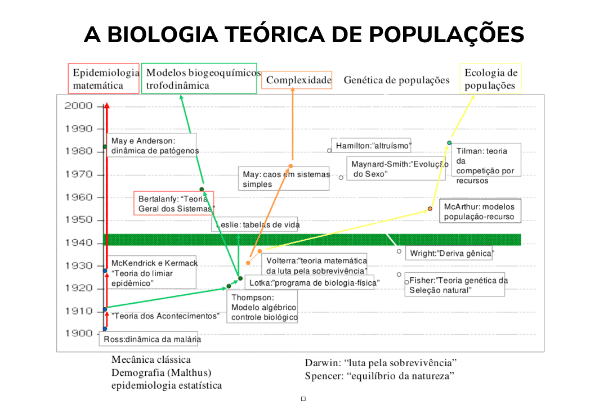

Módulo 3 | Aula 1
Modelos computacionais e Aprendizado de Máquina
Introdução
A modelagem computacional possibilita a criação de representações de sistemas e processos complexos, que podem ser implementadas e analisadas com o auxílio de recursos computacionais. Essas representações permitem compreender, gerenciar e prever o comportamento desses sistemas em diferentes contextos, abrangendo desde a formulação de políticas públicas até o desenvolvimento de sistemas autônomos. Nesse cenário, a inteligência artificial se destaca como um ramo da ciência da computação voltado à construção de modelos e algoritmos capazes de processar informações, identificar padrões e resolver problemas de forma adaptativa.
Esses modelos computacionais tornam-se especialmente relevantes quando lidamos com grandes volumes de dados, cujas relações complexas não são facilmente identificáveis por métodos tradicionais. Nesse contexto, técnicas baseadas em dados, como o Aprendizado de Máquina, passam a desempenhar papel central na construção de modelos capazes de aprender padrões automaticamente.
O aprendizado de máquina é um subcampo da inteligência artificial que permite que computadores aprendam a partir de dados, reconhecendo padrões e melhorando seu desempenho conforme recebem mais informações. Já o aprendizado profundo é um subcampo do aprendizado de máquina que utiliza redes neurais, inspiradas no funcionamento do cérebro, compostas por várias camadas que ajudam o computador a entender informações de forma mais detalhada e complexa, possibilitando lidar com problemas difíceis e grandes volumes de dados.
Atualmente, uma grande quantidade de dados é gerada diariamente devido ao avanço tecnológico. Por esse motivo, algoritmos de aprendizado de máquina são cada vez mais utilizados para criar modelos a partir de dados e, com isso, extrair informações relevantes. Para gerar um modelo de aprendizado de máquina, um algoritmo utiliza um conjunto de regras em uma base de dados de treino a fim de encontrar uma equação que descreva a relação de tais dados. Por fim, o modelo é capaz de receber novos dados de entrada para prever uma saída.

Para verificar se o modelo consegue representar bem os dados, são utilizadas métricas de validação para avaliá-lo. Ao construir um modelo de aprendizado de máquina, não basta que ele funcione bem apenas para os dados utilizados no treinamento. Um aspecto central é sua capacidade de generalizar, isto é, de produzir boas previsões quando exposto a novos dados. Um modelo deve apresentar boa capacidade de generalização e, portanto, não deve sofrer de Underfitting nem de Overfitting.
Identificam padrões e relações em dados rotulados e usam essas informações para prever a ocorrência de eventos futuros ou estimar valores de um novo conjunto de amostras. Os algoritmos de aprendizado supervisionado são considerados preditivos, pois utilizam dados com saídas conhecidas para treinar um modelo. No processo de aprendizado supervisionado, temos as seguintes tarefas:
- Classificação: utilizada quando a variável de saída é discreta. Exemplo: prever a espécie da flor íris.
- Regressão: utilizada quando a variável de saída é contínua. Exemplo: prever o preço de uma casa com base em suas características.
Identificam padrões e relações nos dados sem depender de um elemento externo para orientar o aprendizado. São usados para entender melhor os dados disponíveis, ou seja, são comumente aplicados em análises exploratórias para descobrir novas informações a partir dos dados. Os algoritmos de aprendizado não supervisionado são considerados descritivos, pois utilizam dados não rotulados para treinar um modelo. Uma tarefa clássica do aprendizado não supervisionado é o:
- Agrupamento de dados: utilizado para agrupar dados em subconjuntos que compartilhem características semelhantes. Exemplo: segmentar clientes em diferentes grupos com base em seu comportamento de compra.